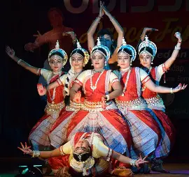
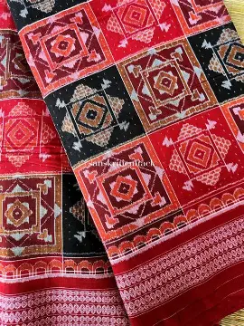
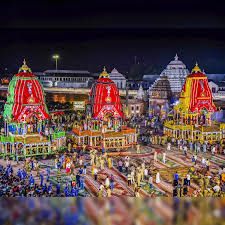

Rich Heritage
Odisha is famous for Odissi dance, handloom crafts, and delicious cuisine.
- 💃 Odissi Dance  Learn More
- 🧵 Sambalpuri Saree  Learn More
- 🍲 Dalma & Pakhala Bhata
 Learn More
Learn More
- 🎭 Rath Yatra Festival  Learn More
Odisha is famous for Odissi dance, handloom crafts, and delicious cuisine.
Learn More